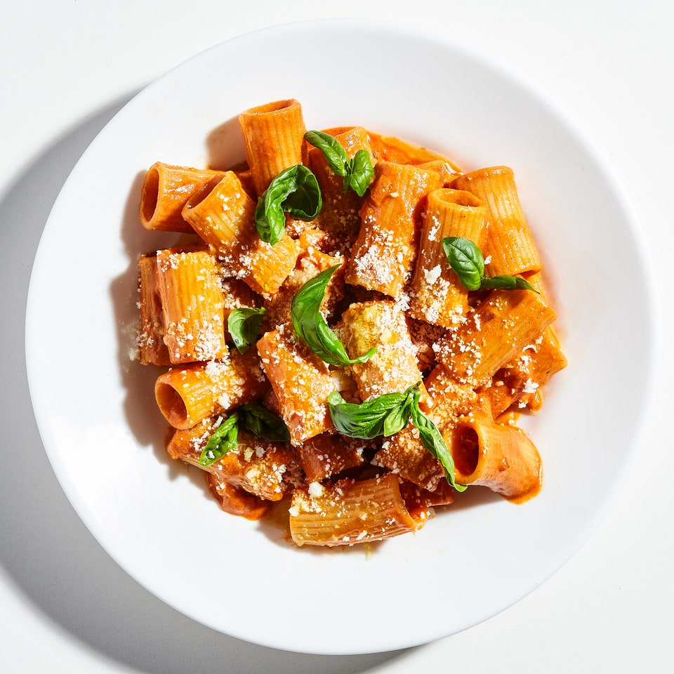

Ingredients
4 servings
- Kosher salt
- 1 medium onion
- 4 garlic cloves
- 4 oz Parmesan cheese
- 2 tbsp extra virgin olive oil
- 1 4.5 oz tube double-concentrated tomato paste
- 1/2 tsp crushed red pepper flake
- 2 oz Vodka
- Juice of 1/2 lemon (optional)
- 3/4 cup heavy cream
- 1 lb rigatoni
- Basil leaves for serving
Method
- Fill a large pot with salted water and bring to a boil.
- Peel and finely chop the onion.
- Smash or chop the garlic cloves.
- Grate the parmesan cheese.
- Heat 2 tbsp olive oil in dutch oven over medium heat. Add onion and garlic and cook, stirring, until onion begins to brown, 5-7 mins.
Now is a good time to drop the pasta.
- Add tube of tomato paste and the red pepper flake and stir to combine. Cook, stirring, until paste is darkened and caramelized, 5-7 mins.
- Deglaze with vodka, optionally adding a squeeze of lemon. Reduce heat to low.
- Scoop about 1/4 cup boiling pasta water into a glass measuring cup, then add the cream to temper.
- GRADUALLY add cream mixture to the dutch oven until a sauce forms, then remove from heat.
- Reserving a cup of pasta water, use a spider to add the cooked pasta to the sauce over low heat.
- Add pasta water and HALF (2oz) of the parmesan. Season with salt.
- Serve with torn basil, parmesan, and a drizzle of olive oil.